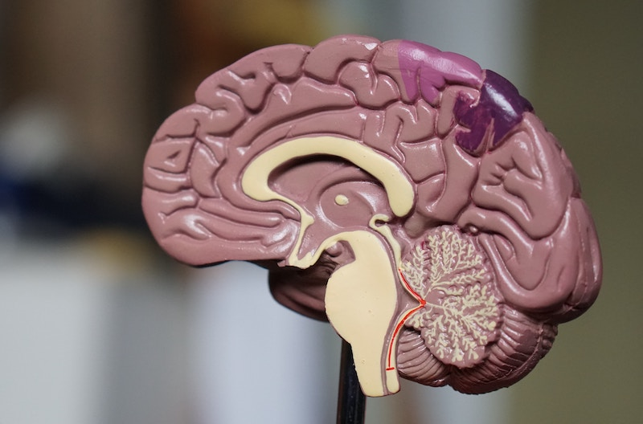
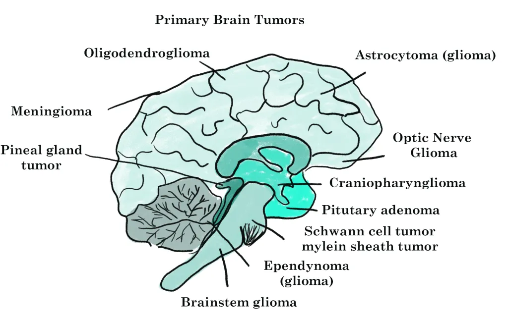
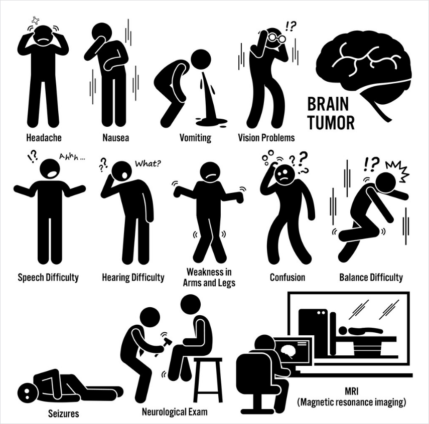
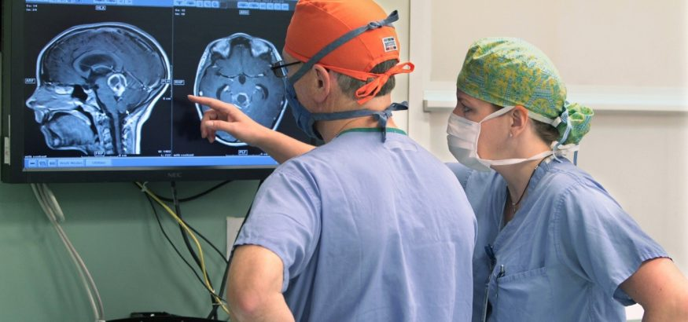

{% extends 'base.html' %}
{% block content %}
What is a 🧠 Tumor?
Let's take a small dive into our brains to learn more

Introduction
A brain tumor is a collection, or mass, of abnormal cells in your brain. Your skull, which encloses your brain, is very rigid. Any growth inside such a restricted space can cause problems. Brain tumors can be cancerous (malignant) or noncancerous (benign). When benign or malignant tumors grow, they can cause the pressure inside your skull to increase. This can cause brain damage, and it can be life-threatening.
Brain tumors are categorized as primary or secondary. A primary brain tumor originates in your brain. Many primary brain tumors are benign. A secondary brain tumor, also known as a metastatic brain tumor, occurs when cancer cells spread to your brain from another organ, such as your lung or breast.
Types of brain tumors
There are mainly 2 types of tumors:
- Primary Tumors
- Secondary Tumors
On our webpage, we use Advanced Deep Learning techniques to distinguish between 3 Primary Tumors:
- Meningioma Tumors
- Glioma Tumors
- Pituitary Tumors
Primary Brain Tumors
Primary tumors originate in our brains. They can develop from our:
- Brain cells
- The membranes that surround our brain, which are called meninges
- Nerve cells
- Glands
Primary tumors can be benign or cancerous. In adults, the most common types of brain tumors are gliomas and meningiomas.

Secondary Brain Tumors
Secondary brain tumors make up the majority of brain cancers. They start in one part of the body and spread, or metastasize, to the brain. The following can metastasize to the brain:
- Lung Cancer
- Breast Cancer
- Kidney Cancer
- Skin Cancer
Secondary brain tumors are always malignant. Benign tumors don’t spread from one part of your body to another.
What are the risk factors for a brain tumor?
Risk factors for brain tumors include:
Family History
Only about 5 to 10 percent of all cancers are genetically inherited, or hereditary. It’s rare for a brain tumor to be genetically inherited. Talk to your doctor if several people in your family have been diagnosed with a brain tumor. Your doctor can recommend a genetic counselor for you.
Age
Risk for most types of brain tumors increases with age.
Race
Brain tumors in general are more common among Caucasians. However, African-American people are more likely to get meningiomas.
Chemical exposure
Being exposed to certain chemicals, such as those you might find in a work environment, can increase your risk for brain cancer. The National Institute for Occupational Safety and HealthTrusted Source keeps a list of potential cancer-causing chemicals found in work places.
Exposure to radiation
People who have been exposed to ionizing radiation have an increased risk of brain tumors. You can be exposed to ionizing radiation through high-radiation cancer therapies. You can also be exposed to radiation from nuclear fallout. The nuclear power plant incidents in Fukushima and Chernobyl are examples of how people can be exposed to ionizing radiation.
No history of chicken pox
According tothe American Brain Tumor Association, people with a history of childhood chicken pox have a decreased risk of getting brain tumors.
What are the symptoms of brain tumor?
Symptoms of brain tumors depend on the location and size of the tumor. Some tumors cause direct damage by invading brain tissue and some tumors cause pressure on the surrounding brain. You’ll have noticeable symptoms when a growing tumor is putting pressure on your brain tissue.

Headaches are a common symptom of a brain tumor. You may experience headaches that:
- are worse in the morning when waking up
- occur while you’re sleeping
- are made worse by coughing, sneezing, or exercise
You may also experience:
- vomiting
- blurred vision or double vision
- confusion
- seizures (especially in adults)
- weakness of a limb or part of the face
- a change in mental health
The following symptoms can occur with pituitary tumors:
- nipple discharge, or galactorrhea
- lack of menstruation in women
- development of breast tissue in men, or gynecomastia
- enlargement of the hands and feet
- sensitivity to heat or cold
- increased amounts of body hair, or hirsutism
- low blood pressure
- obesity
- changes in vision, such as blurry vision or tunnel vision
Treatment of brain tumors
The treatment of a brain tumor depends on:
- the type of tumor
- the size of the tumor
- the location of the tumor
- your general health

The most common treatment for malignant brain tumors is surgery. The goal is to remove as much of the cancer as possible without causing damage to the healthy parts of the brain. While the location of some tumors allows for easy and safe removal, other tumors may be located in an area that limits how much of the tumor can be removed. Even partial removal of brain cancer can be beneficial.
Risks of brain surgery include infection and bleeding. Clinically dangerous benign tumors are also surgically removed. Metastatic brain tumors are treated according to guidelines for the type of original cancer.
Surgery can be combined with other treatments, such as radiation therapy and chemotherapy.
Physical therapy, occupational therapy, and speech therapy can help you to recover after neurosurgery.
Outlook
The outlook for a brain tumor will depend on:
- the type of tumor
- the size of the tumor
- the location of the tumor
- your general health
Early treatment can prevent complications that can occur as a tumor grows and puts pressure on the skull and brain tissue. See your doctor if you’re worried about any symptoms you’re experiencing.
{% endblock %}